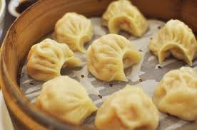

Momos: A Himalayan Delight

Ingredients
- All-purpose flour: 2 cups
- Water: about ¾ cup (adjust for dough consistency)
- Ground meat (chicken, lamb, or pork): ½ pound
- Chopped onion: 1 small
- Grated ginger: 1 tablespoon
- Chopped garlic: 1 clove
- Chopped cilantro: ¼ cup
- Chopped green chilies (optional): to taste
- Salt: to taste
- Oil: for frying
Instructions
- In a large bowl, combine flour and gradually add water, kneading until a smooth and elastic dough forms. Cover the dough with a damp cloth and let it rest for 30 minutes.
- While the dough rests, prepare the filling. In another bowl, combine ground meat, onion, ginger, garlic, cilantro, chilies (if using), and salt. Mix well.
- On a lightly floured surface, roll out the dough into a thin sheet. Use a round cookie cutter or a glass to cut out circles.
- Place a spoonful of filling in the center of each dough circle. Pinch the edges together to form crescent-shaped momos, making sure to seal them properly.
- Heat oil in a pan over medium heat. Carefully place the momos in the pan and cook for a few minutes until golden brown on the bottom. Add a splash of water to the pan, cover it, and steam the momos for 5-7 minutes, or until cooked through.
- Serve momos hot with your favorite dipping sauce, such as chili sauce or chutney.
Enjoy these delicious momos - a taste of the Himalayas!